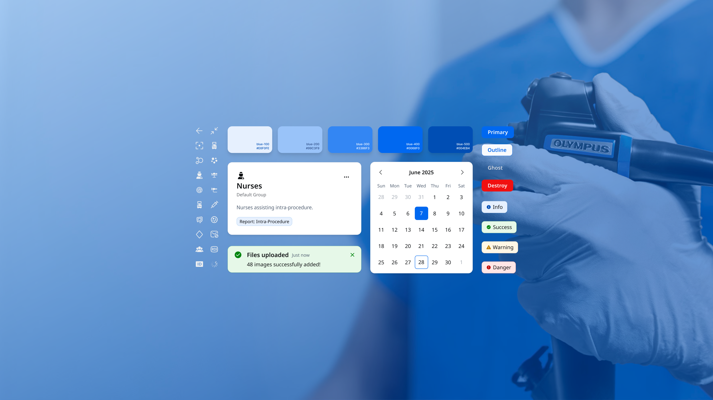
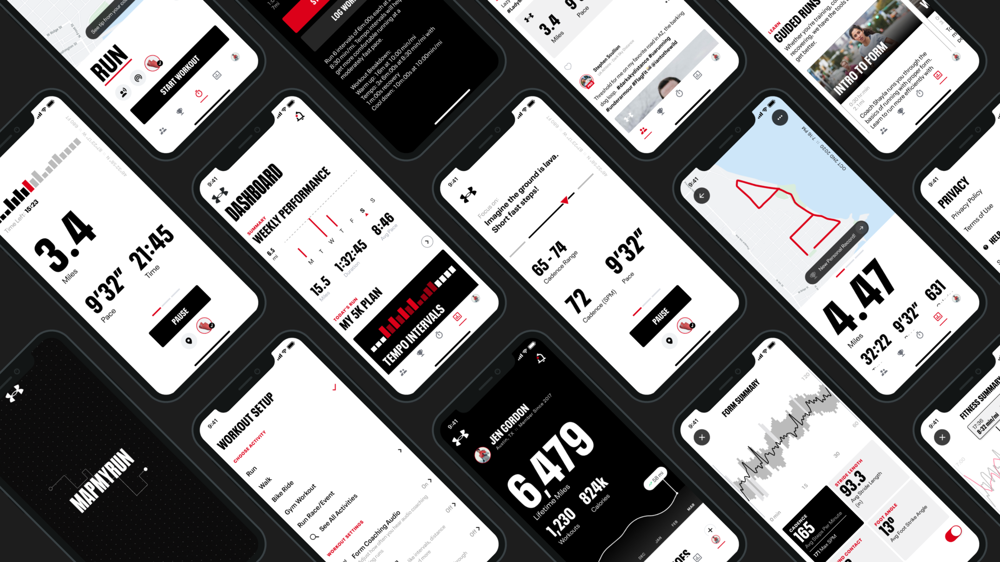
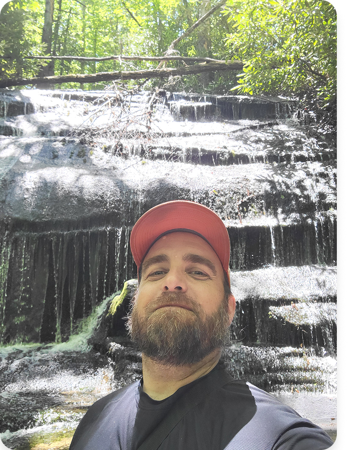

Daniel Townson is a systems-driven designer building experiences at the intersection of hardware and software.
EXPERIENCE
Olympus
Under Armour
MapMyFitness
MyFitnessPal
St Jude Medical
Asuragen
FOCUS
Design Systems
Medical Software
Health Tracking
Wearables
Consumer Apps
Selected works

Unifying the endoscopic workflow for industry leader Olympus

A brand-right system-driven redesign of Under Armour's fitness apps
Find Your Form with a co-branded smartwatch by Under Armour and Samsung
Premium insights to help you hit your nutrition goals

About Me
I'm a product designer with close to a decade of experience building and scaling design systems for complex software. Most of that time was spent at Under Armour, working across MapMyRun, MapMyFitness, and MyFitnessPal, including a co-branded fitness experience for the Samsung Galaxy Watch. More recently, I was the sole designer on Olympus's design systems team, partnering with an embedded engineer to bring consistency to a suite of endoscopic workflow software used by clinicians every day.
I care about the gap between a well-designed component and a well-designed system — the tokens, documentation, and governance that make a product actually hold together as it grows.
How I work with AI
I treat AI as a working partner, not an autopilot — it moves fastest when I stay the one making the calls on content, hierarchy, and correctness, and when it checks its own work instead of asking me to take it on faith. This site is a live example: its case studies are synced from Figma by matching real layer names instead of guessing, every image gets checked against actual pixels before a caption gets written, and every change gets a structural and visual pass before it ships.